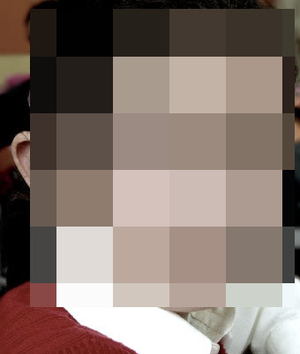
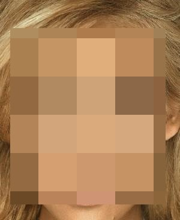
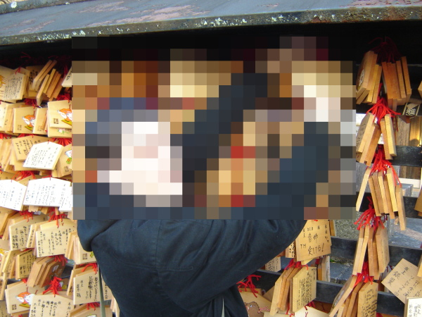

Here is my elder daughter, Marie Véronique :

Here are Marie-Chantal and Marie-André, my twin daughters :
Here is my wife, Josette :

Finally, that's me at the Kiyomizudera (清水寺, kanjis are "pure", "water", "temple"), in Kyoto, during my trip to Japan.

See how cool my jacket was, unfortunately it has been stolen few weeks later. New one is even cooler